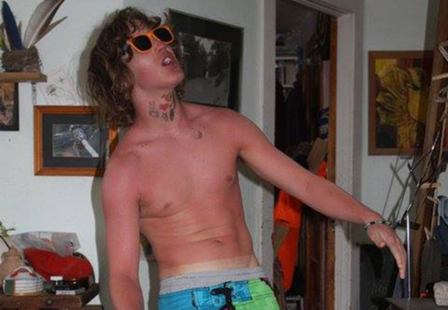
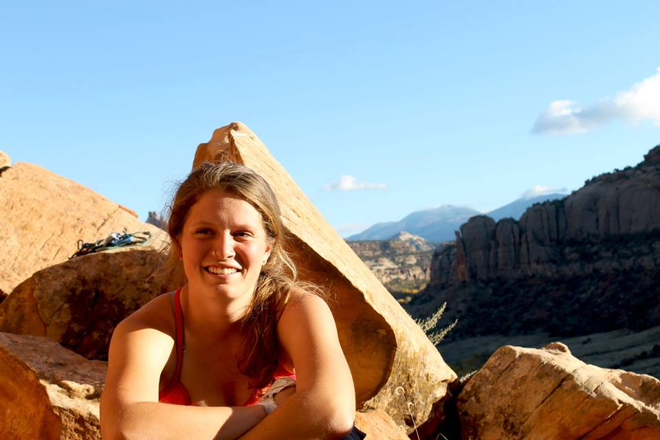

We're a student club dedicated to providing students and members of the front range climbing community with opportunities to enjoy climbing. We connect our members with one another and the community.
How do I join?
Membership costs $20 for one year or $50 for five. Come by the club office at UMC 443 during our office hours to purchase one!
Do I have to be a student to join?
No, The alpine club is open to the entire Boulder climbing community.
What are the benefits of membership?
All members receive discounts with our sponsors and are able to rent our gear! Our extensive collection of guide books are available as well to borrow, come by the office to see what we have.
When do you meet?
At the beginning of each semester, we hold a big club meeting for members and anyone interested about the club. There's always a slide show, gear raffle, presentations by our sponsors, and an after party!
What gear do I need?
For the typical climbing trip you need a harness, shoes, chalk bag and belay device. If you are new to the sport the Alpine Club can lend you any of this gear. All the other necessarily equipment is discussed at the pre-trip meeting.
Do you rent gear?
YES! We rent: climbing shoes, harnesses, helmets, belay devices, chalk bags, crampons, ice axes and guide books. To check out gear you must show a valid membership card and Government ID.
Do you teach people how to climb?
If you are looking for professional instruction, we recommend any of the climbing gyms or AMGA guides in the Boulder area. We do try to provide several free or highly subsidized belay classes with one of the climbing gyms each semester for those that are completely new to the sport. While there are plenty of opportunities to meet new climbers and deepen your knowledge of climbing through the club, we are not a professional guiding service.
Do you have any ice climbing trips?
Yes we do. Every February, the club heads down to Ouray, Colorado for a weekend of ice climbing. Ouray is a beautiful town and by far the best place to learn how to ice climb. Usually, half the members that attend each year have never ice climbed before. For experienced ice climbers, Ouray and the surrounding area has numerous first class ice routes.
How do I become more involved with the Alpine Club at CU?
If you love our trips and want to be more involved with the club, talk to a current Board Member. We're always looking for another Board Member or two. If this is something that interests you, spend plenty of time climbing with current members and getting to know us. Once you've gotten to know the club, let us know that you want to be more involved. All Board Members must lead one trip per semester as well as complete office hours, at least one hour in the club office each week.
Office Hours
Alpine Club office hours are in full swing! Come by room 443 in the UMC to access to equipment, books, or purchase a membership!
Posted below are the hours we are in the office.
Be aware that we are students as well as board members so we may be running to or from a class at the top of the hour.
We are happy to accomodate you after-hours but please post on the Alpine Club facebook page or email us at cualpine@gmail.com to set it up.
Note that we only accept cash and checks!
Monday
Tuesday
Wednesday
Thursday
Friday
8:00 AM
9:00 AM
Bobby
10:00 AM
Ben C
Fritz
Curtis
Ginny
11:00 AM
Sarah
12:00 PM
Gracyn
1:00 PM
Tatiana
Jake
2:00 PM
Drew L
Kristina
Laura
Drew H
3:00 PM
Ben W
Slato
4:00 PM
Vale
5:00 PM
Sponsors
By purchasing a membership with the CU Alpine Club, members receive access to great deals from local and national retailers!
3 month pass for $185.
Offers Climbing, yoga, and fitness.
Members receive a 3 month pass for $160.
Free classes & workshops based on training techniques and pushing your climbing to the next level.
3 month membership for $165.
Free classes that range from safe belay techniques to saavy anchor building skills.
Stay tuned to our Facebook page for these events!
20% off all apparel and accessories.
Use code "Alpine20" for the discount at checkout.
Helps provide food for our club trips, as well as offering limited time discounts to members via our facebook page.
Huge deals on this season's gear at last year's prices.
ALPINE10 for additional 10% off.
College Outside is a network of outdoor clubs of universities that sponsor events throughout the year.
Undergraduate members of the Alpine Club have access to "The Gear Closet" for discounted gear. People can be added once a semester with a roster. Instructions will be posted on our facebook page towards the beginning of each semester.
Clay Wadman's incredible hand drawn topo's of all the famous big walls are for sale in our office for a discounted price to Alpine Club members. Send us an email to see what we currently have instock!
Leadership
Jake Dickerson
Year: Senior
Major: EBIO
Favorite type of climbing: Pretty much all climbing!
Favorite Alpine Club trip: Indian Creek & Red Rocks
Quote: Did somebody say wonder?
Ben Crawford
Year: Senior
Major: EBIO
Favorite type of climbing: Sport & Trad
Favorite Alpine Club trip: Red Rocks
Quote: Ricklin' them rocks.

Drew Herder
Year: Senior
Major: Film
Favorite type of climbing: Naked Off-Widths
Favorite Alpine Club trip: Vedauwoo
Quote: You gotta watch out for polar bear liver, 4 oz is deadly.
Fritz Carpenter
Year: Senior
Major: Geography / Hydrology
Favorite type of climbing: Sport / Mixed / Aid / Trad
Favorite Alpine Club trip: Ouray Ice
Gracyn Lynn Overstreet
Year: Junior
Major: Psychology / English
Favorite type of climbing: Crack Climbing
Favorite Alpine Club trip: Indian Creek
Max Owens
Year: Senior
Major: EBIO
Favorite type of climbing: Trad & Sport
Favorite Alpine Club trip: Indian Creek
Vale Zins
Year: Senior
Major: EBIO / MCDB
Favorite type of climbing: Anything involving rocks & mountains
Favorite Alpine Club trip: Indian Creek & Shelf Road

Ginny Keith
Year: Sophomore
Major: Biochemistry & MCDB
Favorite type of climbing: Sport & Multipitch
Favorite Alpine Club trip: Ouray
Curtis Beutler
Year: Senior
Major: Environmental Studies
Favorite type of climbing: Extreme
Favorite Alpine Club trip: Vedauwoo and Shelf
Quote: "Climbing is hard, not climbing is even harder." - Charlie Fowler
Zach Nadiak
Year: Senior
Major: EBIO & Environmental Studies
Favorite type of climbing: Crack (even though I own no gear)
Favorite Alpine Club trip: Indian Creek and Shelf Road
Quote: "Huck and hope till death!"
Sarah Zemach
Year: Senior
Major: Integrated Physiology
Favorite type of climbing: Sport, single and multi-pitch
Favorite Alpine Club trip: The Creek
Quote: "Everything is 5.9 on top rope!"
Tatiana Armstrong
Year: Senior
Major: Advertising
Favorite type of climbing: CRACK
Favorite Alpine Club trip: Ouray
Quote: "Tangled!!" - Ben Crawford
Paulina Arcuri
Year: Sophomore
Major: EBIO & Spanish
Favorite type of climbing: Crimpy Sport
Favorite Alpine Club trip: EVERY ALPINE CLUB TRIP!
Quote: Climbing may be hard, but it's easier than growing up.
Kristina Cowell
Year: Junior
Major: Geography (minor in Geology)
Favorite type of climbing: Sport!
Favorite Alpine Club trip: Shelf Road & Joes Valley
Quote: "When the pursuit of natural harmony is a shared journey, great heights can be attained." - Lynn Hill
Bobby Thomas
Year: Sophomore
Major: Psychology
Favorite type of climbing: Trad / Bouldering
Favorite Alpine Club trip: The Creek
Quote: "Because it's there."
Laura Hoover
Year: Freshman
Major: Anthropology
Favorite type of climbing: Sport / Trad / Bouldering
Favorite Alpine Club trip: Vedauwoo
Quote: "No where to go but everywhere." - Kerouac
Drew Layman
Year: Sophomore
Major: Geography
Favorite type of climbing: Anything on Toprope
Favorite Alpine Club trip: Anything that has Toprope
Quote: "Today didnt suck" - Drew Layman
Ben Wilbur
Year: Freshman
Major: Defense against the Dark arts
Favorite type of climbing: Rocks
Favorite Alpine Club trip: Penitente
Quote: "Rush Alpine Club" - Alex Honnold